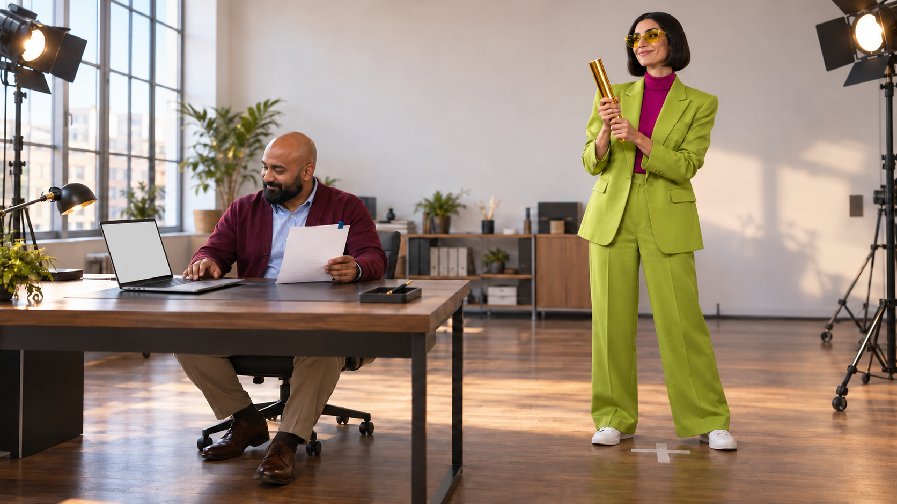
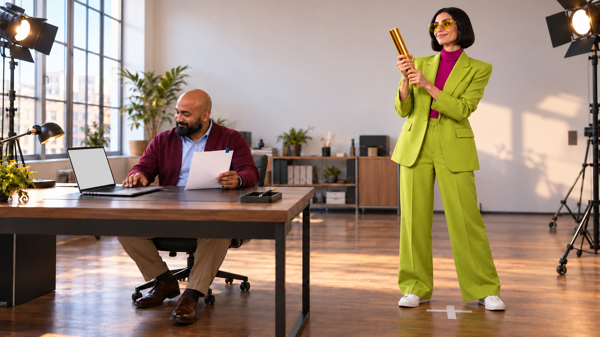
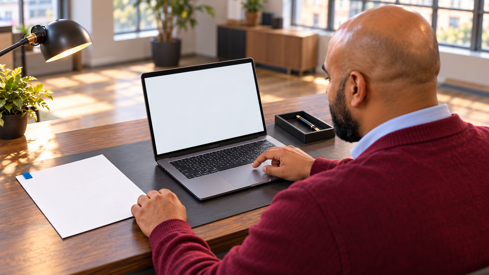
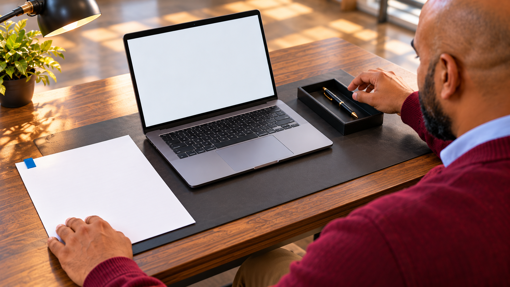
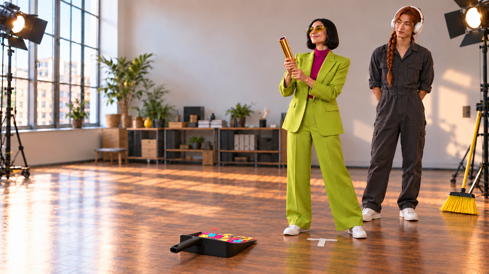
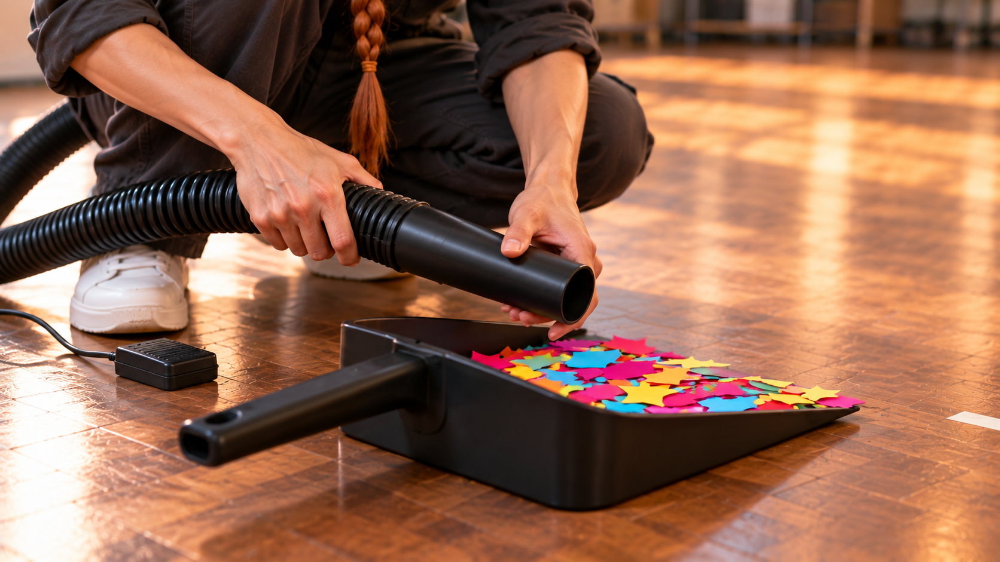
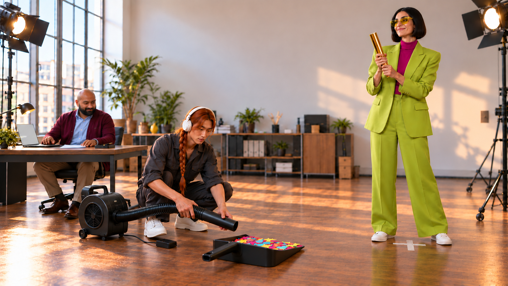
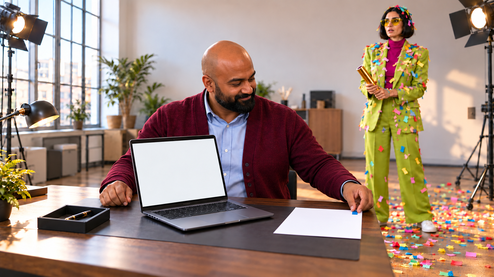

AI 결과가 뜨자 감독은 축포부터 터뜨린다. 확인을 마친 뒤 다시 축하하려니 축포는 비었고, 재활용 꽃가루는 감독에게만 돌아온다.
S01 · 0–3초

광고 세트 와이드. Q는 왼쪽 책상 노트북 앞, 원문을 왼손에 들고 오른손은 트랙패드 위. D는 오른쪽 T마크에서 금색 축포를 양손으로 잡고 아직 작동하지 않았다. 결과 UI는 빈 후합성 영역.
동작 노트북에 AI 정리 결과가 나타나자 D의 눈과 축포 든 팔이 동시에 기대감으로 올라간다. 아직 발사하지 않음.
AI 결과 나왔습니다.
S02 · 3–6초

D가 오른쪽 T마크에서 금색 축포를 비스듬히 위로 향하게 든다. 종이꽃가루 아직 공중에 없음. Q는 왼쪽 후경 원문.
동작 D가 축포를 자신의 위쪽 공간으로 짧게 세운 뒤 한 번 발사한다. 큰 색종이 조각이 오른쪽 촬영 공간에만 터지고 가라앉는다. 왼쪽 Q의 책상은 깨끗하게 남는다.
S03 · 6–10초
Q 근접. 왼손 원문 큰 동그라미, 노트북 결과 큰 삼각형을 대조할 수 있는 구도. 오른손은 화면 아래 비어 있음. D 후경 축포를 내려 든 채.
동작 Q가 원문과 결과를 한 번 번갈아 본 뒤 빈 오른손 손바닥을 D 쪽으로 들어 멈춘다.
잠깐. 아직 확인 중.
S04 · 10–13초
스태프 S가 오른쪽 바닥 색종이 앞에 무릎을 약간 굽힘. 왼손 쓰레받기 손잡이로 바닥 고정, 오른손 빗자루. D T마크 뒤에서 빈 축포를 들고 기다림.
동작 S가 큰 종이꽃가루를 빗자루로 한 번 길게 밀어 넓은 쓰레받기에 모은다.
S05 · 13–16초

Q 어깨너머, P 원문은 왼쪽 책상에 펼쳐져 청색 탭 보임. 노트북 입력 조건 펼침. Q 오른 검지가 트랙패드 위, 왼손 원문 옆.
동작 Q가 공유할 정리 양식의 적용 범위를 '전체'에서 원문에 맞는 '대상 항목'으로 한 번 바꾸고 재적용한다.
조건을 맞춰, 다시 적용.
S06 · 16–19초

원문과 재적용 결과의 큰 동그라미가 나란히 후합성될 안정 화면. 검정펜은 원문 오른쪽 낮은 펜받침에 놓여 있고 Q 오른손이 잡기 직전, 왼손 종이 고정.
동작 Q가 오른손으로 펜받침의 검정펜을 집어 같은 항목을 다시 대조하고 원문 확인칸에 작은 체크 하나를 한다.
이번 결과, 확인 끝.
S07 · 19–22초

D 같은 T마크에서 빈 금색 축포를 다시 양손에 들어 작동 전. S 옆에서 기다림. 꽃가루 담긴 받기는 D 앞 바닥에 보임. 청소가 끝난 받기는 같은 자리에 돌려 놓아 낮은 입구가 D 쪽을 향하고, 높은 뒤벽은 화면 왼쪽이다.
동작 D가 빈 축포를 한 번 더 눌러 보지만 아무것도 나오지 않는다. 입구를 살짝 내려다본다.
S08 · 22–23.5초

받기와 호스 입구만 크게 보이는 낮은 근접. S 양손 호스, 이미 뒤 송풍구에 연결된 상태. 받은 종이꽃가루 정지, 장비 OFF. 감독은 프레임 밖, T마크 끝만 가장자리에.
동작 S가 연결된 노즐을 받기의 높은 뒤벽 위로 짧게 내려 위치를 잡는다. 바람이 같은 종이 더미를 지나 D 쪽 낮은 입구로 나갈 방향이며 아직 OFF다. 장비를 새로 조립하지 않는다.
있는 걸로 갑니다.
S09 · 23.5–28.5초

같은 축 넓은 샷. S 호스 받기 뒤, 종이 받기에 모임, D 앞에 서서 빈 축포 들고 축하 기대. Q 왼쪽 책상 안전.
동작 S가 발판 옆의 오른발을 짧게 옮겨 발판에 접촉한 뒤 누른다. 송풍이 켜지면 받기 위 종이가 낮은 입구를 지나 D에게만 날아가 머리·수트에 달라붙는다. 같은 발로 끄고 종이가 가라앉는다. 양손은 노즐을 유지한다.
S10 · 28.5–32.5초

Q 앞에 기존 노트북과 같은 청색 탭 확인 원문 P가 있다. 펜은 Q의 해부학적 오른쪽 펜받침(이 카메라에서 화면 왼쪽)에 내려놓여 있다. Q 오른손은 비고, 왼손은 책상 원문의 탭 끝을 잡아 들어 보이기 직전이다. D 뒤오른쪽 꽃가루/빈 축포 유지.
동작 Q가 왼손으로 같은 확인 원문 P를 들어 기존 노트북 결과 바로 옆에 나란히 보이도록 각도만 맞춘다.
결과와, 확인한 근거.